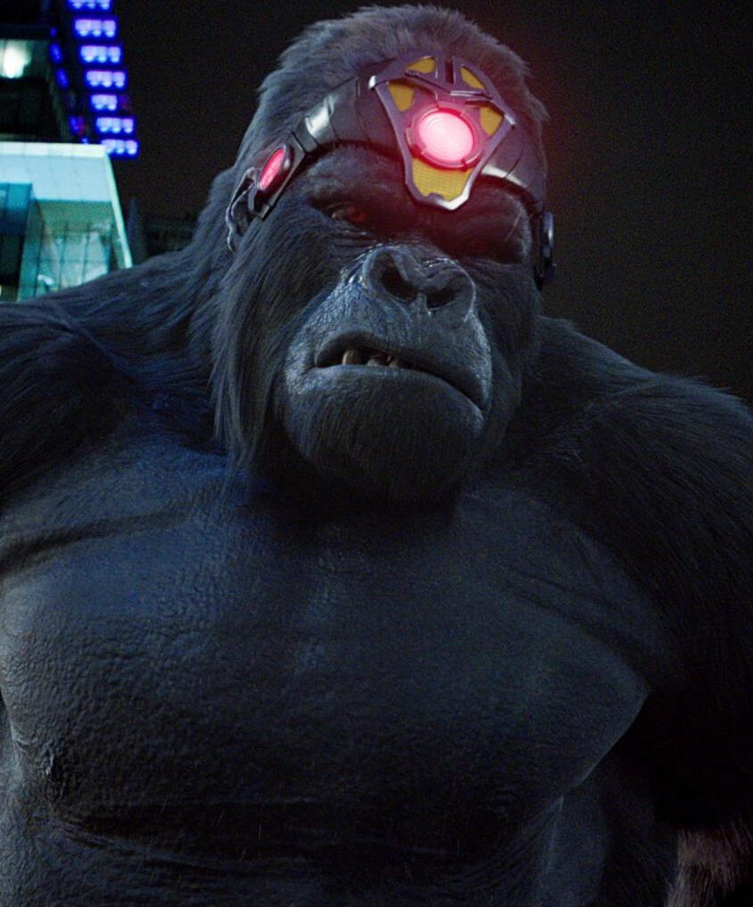

GORILLA GRODD
 Gorilla Grodd é um personagem supervilão que aparece nas histórias em quadrinhos americanas e outras mídias publicadas pela DC Comics , principalmente como um inimigo do Flash (Barry Allen). O personagem foi criado por John Broome e Carmine Infantino , e apareceu pela primeira vez em The Flash #106 (maio de 1959). Ele é um gorila maligno e superinteligente que ganhou poderes mentais após ser exposto à radiação de um estranho meteorito. Grodd apareceu em várias formas de mídia relacionadas à DC, como a franquia Super Friends (dublado por Stanley Ralph Ross), o Universo Animado DC (dublado por Powers Boothe) e a série de televisão do Arrowverse The Flash Gorilla Grodd é um gorila telepático hiperinteligente capaz de controlar as mentes dos outros. Ele era um macaco comum até que uma nave alienígena (reconfigurada de um meteoro radioativo que também fortaleceu Hector Hammond) caiu na casa africana de Grodd. Grodd e sua tribo de gorilas foram imbuídos de superinteligência pelo piloto da nave. Grodd e seu companheiro gorila Solovar também desenvolveram poderes telepáticos e telecinéticos . Liderados pelo alienígena, os gorilas construíram a superavançada Gorilla City. Os gorilas viveram em paz até que sua casa foi descoberta por exploradores. Grodd forçou um dos exploradores a matar o alienígena e assumiu a Gorilla City, planejando conquistar o mundo em seguida.